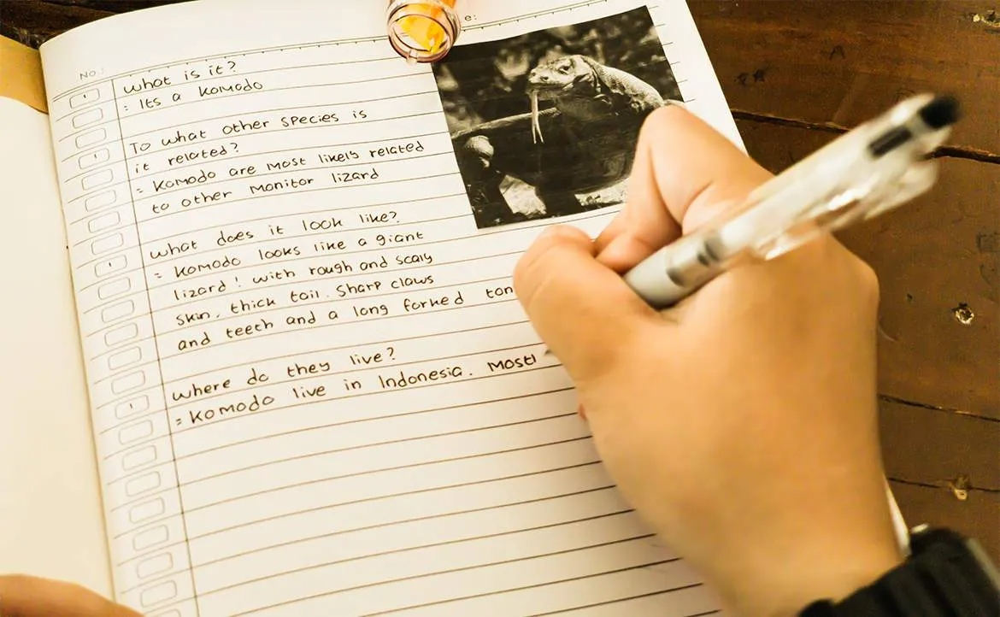

和多數在台灣長大的孩子一樣，我最初學英文的方式及目的非常制式──背單字、做題目、準備考試。
對我來說，英文只是成績單上的一項科目，而不是能拿來使用的工具。英文課本裡的主題，從來沒有真正引起我的興趣，那些我背過的句子、記住的文法，也幾乎沒有使用的機會。
但那時的我還不知道，自己與英文，甚至與「語言」的關係，會在往後的日子裡，悄悄改變。
寫：在英文日記裡，找到情緒出口

真正讓我第一次「使用」英文，是高中時期為了準備大學英文作文，而開始寫的短文。當時的我完全是用中文的邏輯在寫英文內容，每次交上去的作文也都被老師改得滿江紅。
但我卻意外發現──原來我喜歡用英文寫東西。那是一種很奇妙的感覺，好像在另一個語言裡，找到全新的空間、重新認識自己。
一般來說，英文成績越不理想的人，畢業後往往會遠離英文。但我卻在脫離成績束縛後，重新與英文建立連結，甚至變得越來越親近。
高中畢業後，一位移民美國的朋友推薦了一個叫 Lang-8 的平台（目前已停站，為 HiNative 的前身），那是一個讓全球語言學習者，可以互相修改日記的地方。
我仍記得，自己在那裡寫的第一篇英文日記，標題是〈紅色〉。那是一篇小故事，我只是想表達，雖然我是女生，但從小就不喜歡粉色、紅色等，那些被認為「應該是女生喜歡」的顏色。
當時的我完全不知道，那篇再簡單不過的短文，會成為改變人生的開始。
幾年下來，我在 Lang-8 上寫了 200 多篇短文。我最在意的，從來不是英文進步多少，而是「我寫得開不開心？」、「我是否真的說出心裡想講的話？」
那段日子裡，英文成為我抒發心情的出口──無論心情好壞都想寫。它已不是我必須征服的科目，而是一股能療癒我的力量。
說：透過語言交換，學會自信表達
後來，在外貿協會的培訓中，我迎來了人生第一次英文簡報。
那次我非常緊張，雖然沒有緊張到在台上說不出話，但仍無法自在地用英文演說，也沒辦法自然地把個性融入內容，用自己想要的語氣、態度說英文。
於是我開始逼自己跳進更可怕的環境：參加英文面試、與外籍同事協作、做線上英文簡報，甚至指導外籍專案經理使用應用程式。
回想起來，我當時沒想太多，只是單純希望自己能做得更好。那些幾乎讓我「細胞死好幾萬個」的經驗，反而逐漸累積成「勇敢」的基礎。
真正讓我突破口說瓶頸的，是我開始進行「線上語言交換」。對害羞的我來說，跟陌生外國人聊天，比英文本身更令我恐懼。
但我知道，如果不跨過這項障礙，我永遠沒辦法用英文展現真正的自己。於是我硬著頭皮，一週安排 3 次語言交換。
為了避免尷尬，我每次都會提前準備：寫好想聊的主題、查好相關單字、練習表達方式。真正開始聊天時，雖然不流利、錯誤也不少，我還是會緊張到吃不下飯，但至少我可以「讓對方聽懂我想說什麼」。
語伴們也不斷提供回饋、幫我糾正，我就這樣一點一點地改掉不自然的用法，讓那些躺在腦海裡好久的單字，終於能順利從嘴巴裡「游出來」。
一年多後，雖然我仍會緊張，但已不再害怕。我開始能用英文展現幽默、表達真實的自己，聊天也越來越自在。
這些改變，讓我後來順利成為國外業務，在貿易大會上與各國客戶自然交談、介紹產品──那些曾經遙不可及的事，如今都成為現實。
多年來，我的英文確實進步了，但比起語言能力，我更清楚感受到自己的成長：更敢表達、更有自信，也更能組織自己想說的話。
我終於意識到講錯或有不會的地方，不代表能力不好，而是還不熟、練習不夠多。
我也知道，自己一直在努力，而這份努力是有方向、有理由的。這份從內而外的自信，不是來自於英文本身，而是來自我與語言互動的過程。
從零開始，打造自己的語言地基
現在的我，成為了一個對語言充滿興趣的人，也正式展開另一段語言旅程──法文。
學法文的理由並不偉大，只是因為好奇：那些聽起來複雜的發音，到底怎麼做到的？此外，我也想從零開始，建立起自己對一門語言的理解。
藉此了解自己切入新語言的角度，找出最適合自己的學習方式。若說與英文的關係像重新修復，那與法文的關係，則充滿新鮮與未知。
我先上了線上發音課，接著買了一本能看懂的法文文法書。真正讓我開始覺得「我好像真的可以說法文」，是當我用了一個很「不教科書」的方式學習──從一段自己想說的內容開始。
那時我寫了一小段介紹台灣早餐的短文，用 AI 翻譯成法文，請法國語伴幫我確認語氣是否自然、用詞是否正確。
確認後，我會請語伴錄音，然後我用「回音法」反覆跟讀。那段日子裡，我的嘴巴常常練到痠痛，因為法文的口型與嘴巴肌肉使用方式，和中文完全不同，讓我每天都像在做臉部健身。
幾週後，我終於能自然地唸出整段短文。每當聽到或看到其中的單字，我就會感到興奮──我認得一些法文字了！即使我還不懂文法、不會造句，但我已經與法文建立起信任關係。我讓自己感受學習的樂趣，並問自己：「喜歡這種感覺嗎？」如果答案是「喜歡」，那就繼續學習吧！
我學法文文法的方式也非常隨興，我不按文法書中的順序，而是「看到想理解的句子，就從那句開始」。
我會把句子丟給 AI，問它每個字的意思、功能及時態，並與英文對照，一步步拆開舊有的語言模式、建立起新的語言邏輯。這樣的邏輯框架，能與我的母語及英文都有連接，是文法書裡面少有提到的部分。
這樣的拆解、比較及理解過程，雖然緩慢且充滿疑問，常常會讓我覺得自己好像沒在進步。但回頭一看，才發現那是一段珍貴的「打地基」時刻──當你親手建立了屬於自己的語言學習模式，就像在腦中打造一座法文小王國，每一塊磚，都是你親手放上去的。
從「學習語言」，到真正「用語言生活」
自學英文及法文的過程，讓我真正體會到，語言需要反覆練習、耐心，還要建立情感連結。單字不是背一次就會，而是「忘記、重記、使用、再忘記」的循環。
就像追求人生許多目標一樣，學語言這件事情急不得，只有在每一次的用心學習及領悟中，才能逐漸累積。
後來，我又因為有多年教外國人中文的經驗，加上自己對語言學習的反思，我成為一名中文老師。每次上課，我都會從挖掘學生的興趣開始。
因為我深信，當一個人真心想說某件事時，他自然就會想學該怎麼說出口。沒有疑問，就不會產生熱情，也不會知道自己為什麼要學這句話。
學語言需要循序漸進，但起點，可以由自己選擇──從你有興趣的主題出發，而不是從別人安排的順序開始。
我的法文學習之路還很長，但我已經學會享受那份樂趣，而不是每天被罪惡感與焦慮追著跑。語言是生活的一部分，是表達真實自我的方式，而不是用來比賽或炫耀的工具。
如果你也正經歷學語言的痛苦，我真心想告訴你：先放下學習、問問自己，你真正想用那個語言說什麼？
是想形容一碗麵有多好吃？想談論電動車？想抱怨今天的上班地獄？想罵讓人生氣的同事？想介紹自己的家鄉？還是想表達人生的意義？
這些都可以是起點。你的語言程度從不是問題，重要的是，不論你現在的外語程度如何，都可以直接表達出自己想說的話。
興趣會帶動情緒，而情緒，是學好語言最強的引擎。
當你真的喜歡「做這件事」，就不需要逼自己讀書，你會不自覺地靠近與語言相關的每一件事──影片、歌曲、對話、圖片、日常瑣事。學語言沒有正解，每個人都有自己的方法。而我的故事，就是這樣開始的。